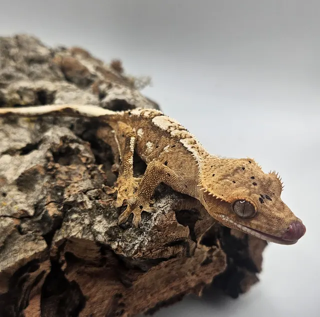
Brindle Dalmatian White Patterning with Phantom Crested Gecko
Available
$130
Hatched July 2025 · 8 g · Sire CornDog x Dam Anastasia
Our crested geckos (Correlophus ciliatus) are captive bred, well handled, and come in a range of colors and patterns. Pick up in Tyler by appointment or choose local delivery within 50 miles. Pair one with a bioactive setup from our supplies page, or read our crested gecko care guide to get started. Not sure what the names mean? See our crested gecko morph guide.

Available
$130
Hatched July 2025 · 8 g · Sire CornDog x Dam Anastasia
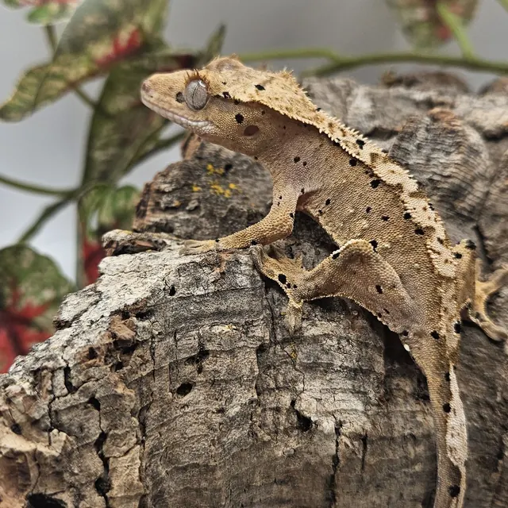
Available
$150
Hatched September 2025 · 7.5 g · Sire Midnight x Dam Belle
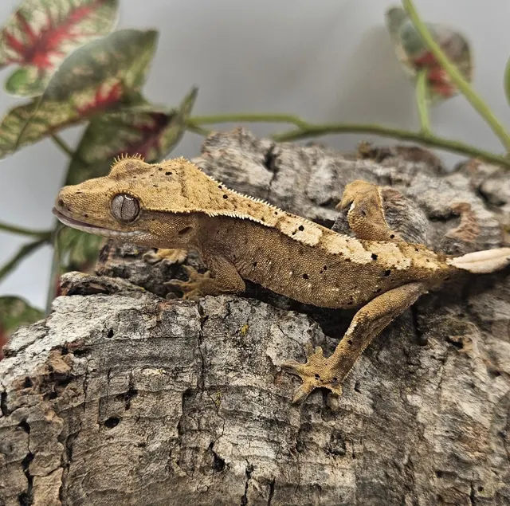
Available
$150
Hatched September 2025 · 7.5 g · Sire Midnight x Dam Belle
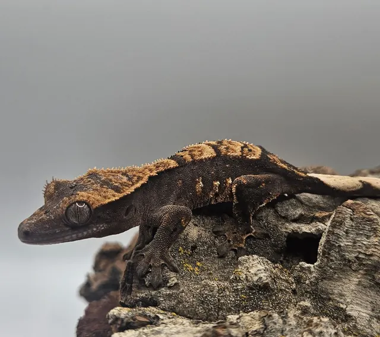
Available
$100
Hatched November 2025 · 8.5 g · Sire Diaval x Dam Joana
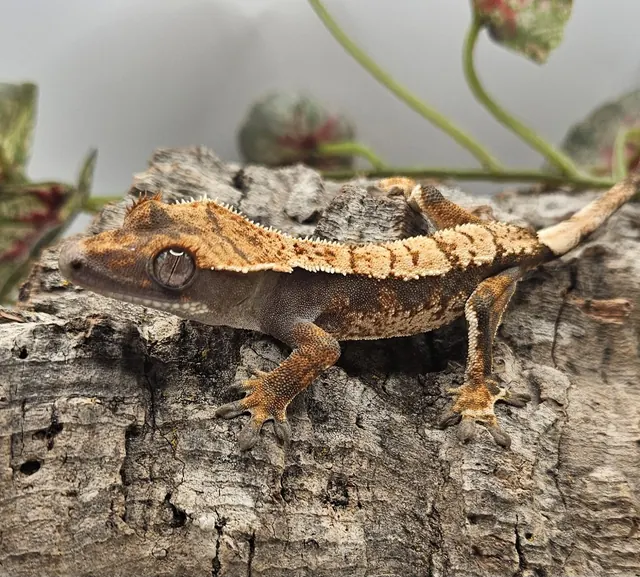
Available
$130
Hatched November 2025 · 7 g · Sire Moon x Dam Lalo
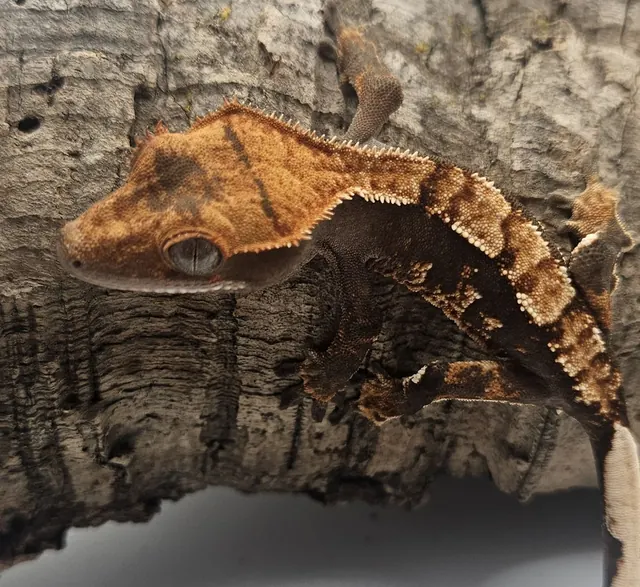
Available
$130
Hatched October 2025 · 7.5 g · Sire Jake x Dam Blueberry
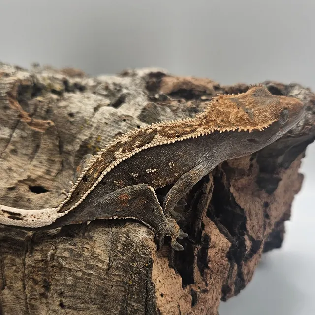
Available
$130
Hatched October 2025 · 9 g · Sire Diaval x Dam Baybell
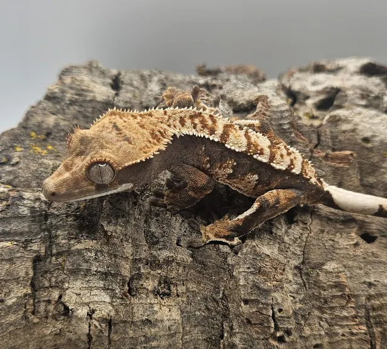
Available
$130
Hatched December 2025 · 7.5 g · Sire Eduardo x Dam Autumn
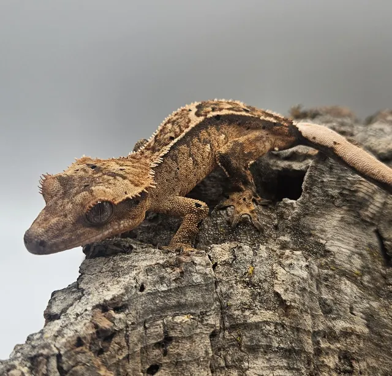
Available
$130
Hatched October 2025 · 8 g · Sire Waffles x Dam Linda
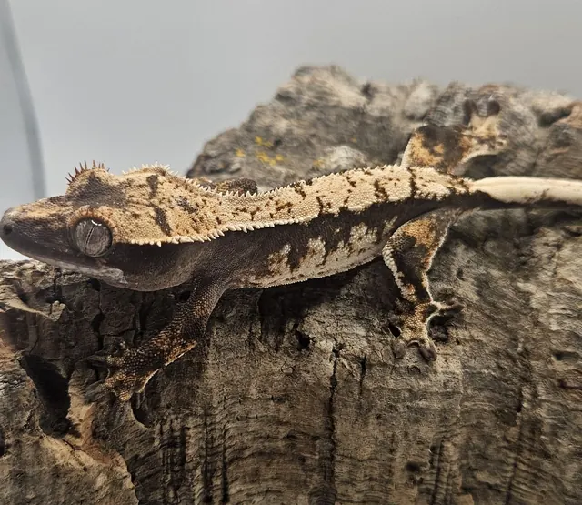
Sold
$130
Hatched November 2025 · 8 g · Sire Moon x Dam Lalo
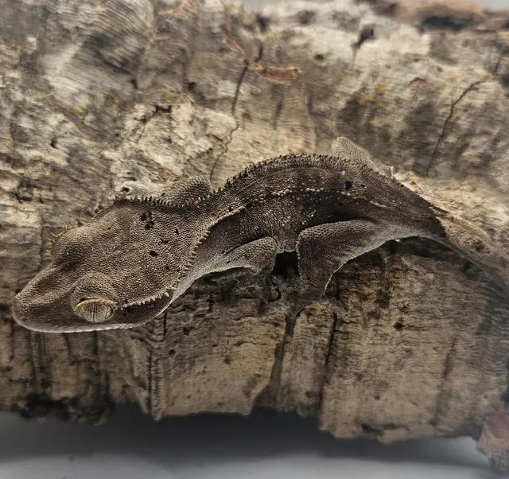
Sold
$130
Hatched November 2025 · 9 g · Sire Diaval x Dam Joana
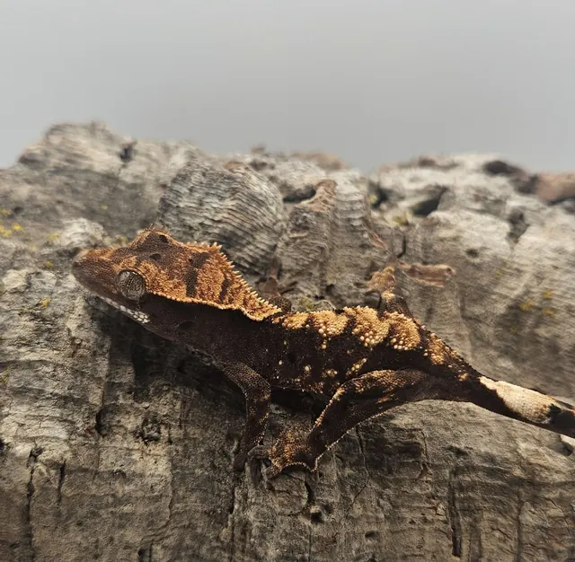
Sold
$100
Hatched January 2025 · 5.5 g · Sire Diaval x Dam Joana

Enclosure, temperature, humidity, feeding, handling, and what to watch for.
Read the guide →Base colors, patterns, traits, and genetics explained, with photos from our collection.
Read the guide →Yes. Crested geckos are one of the most beginner-friendly reptiles. They do well at normal room temperatures, eat a prepared powdered diet, and are generally calm to handle once settled in.
Usually not. Most keepers hold them at comfortable room temperature. Avoid letting the enclosure run hot, and ask us about your home's conditions if you are unsure.
A complete prepared crested gecko diet mixed with water, offered a few times a week, with live insects as an occasional extra. We are happy to tell you what ours eat before you pick up.
We offer local delivery within 50 miles of Tyler, TX: $5 in Tyler and $15 out of town. We ship at our own discretion. Message us to arrange it.
Yes. We are open by appointment only, so message us and we will set up a time.
Our crested geckos are priced by how clear and well developed the markings are and whether the gecko carries a genetic morph. Current prices are listed on this page next to each gecko, and every listing shows its hatch date and weight.
Calvary Exotics is a crested gecko breeder in Tyler, TX. You can pick up by appointment or choose local delivery within 50 miles, and we serve East Texas including Tyler, Longview, Lindale, Whitehouse, Bullard and Jacksonville.
Yes. Every crested gecko we sell is captive bred by us, and each listing shows its hatch date, current weight, sire and dam.
Reach out with questions about availability, pricing, care, or anything else. Please give us until the end of the next business day for a response.